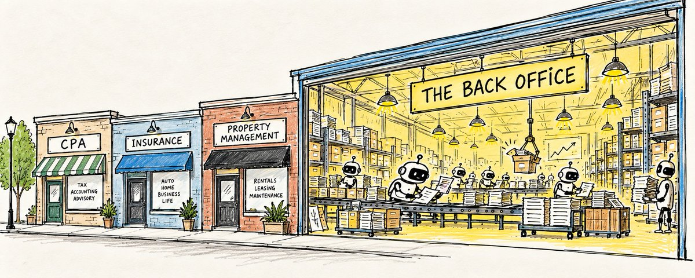
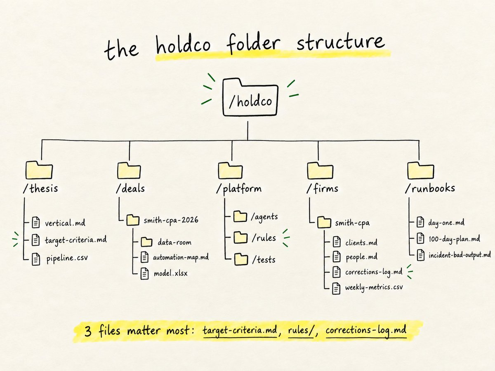
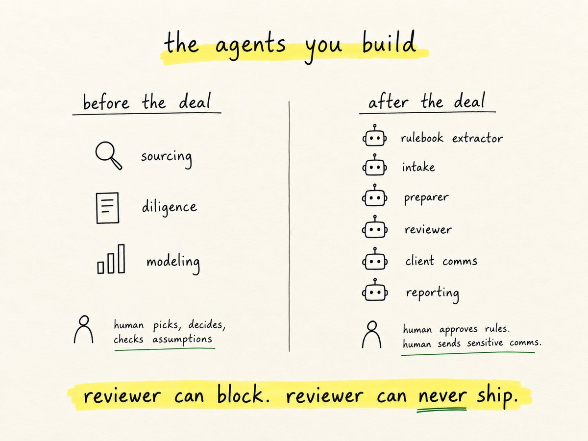
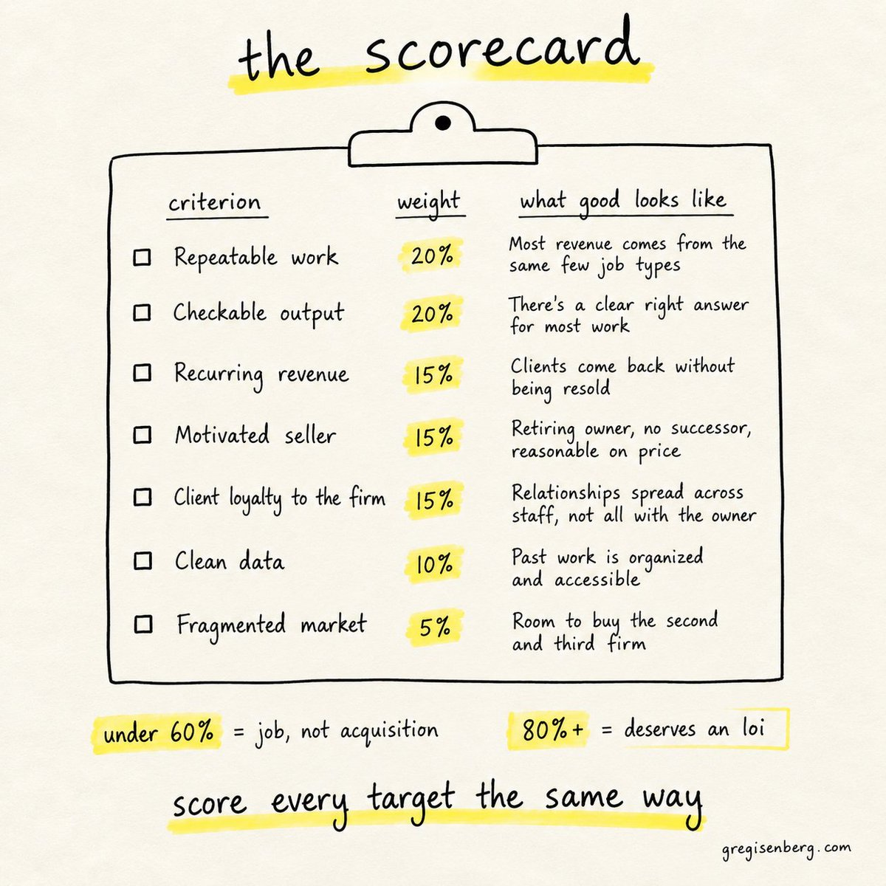
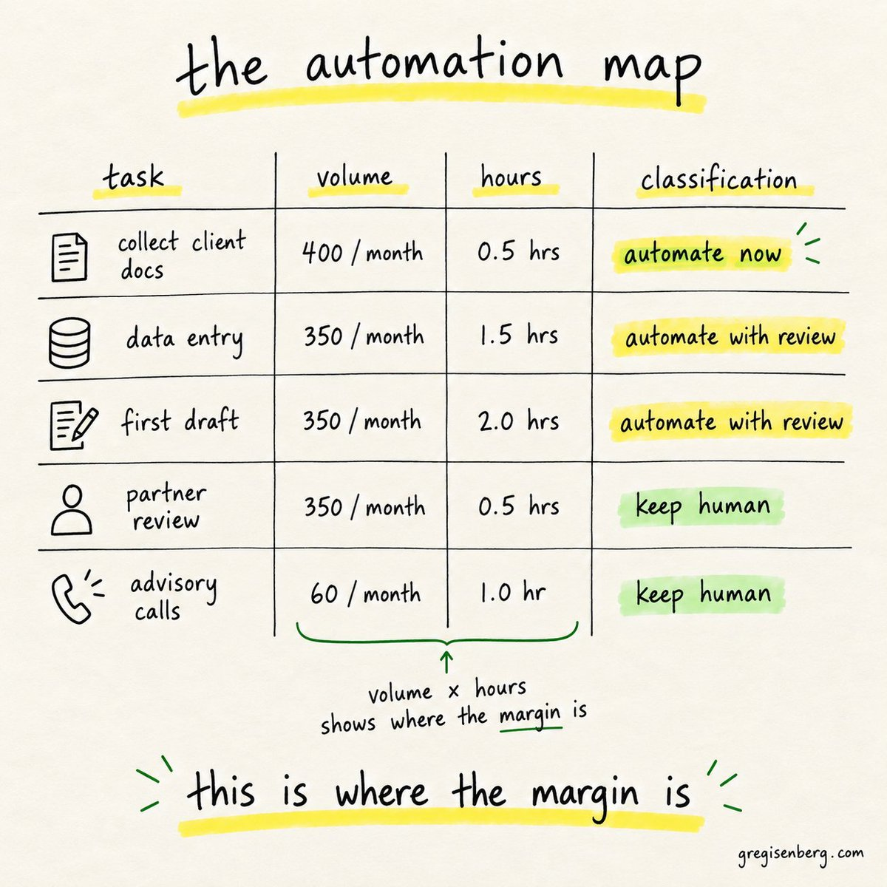
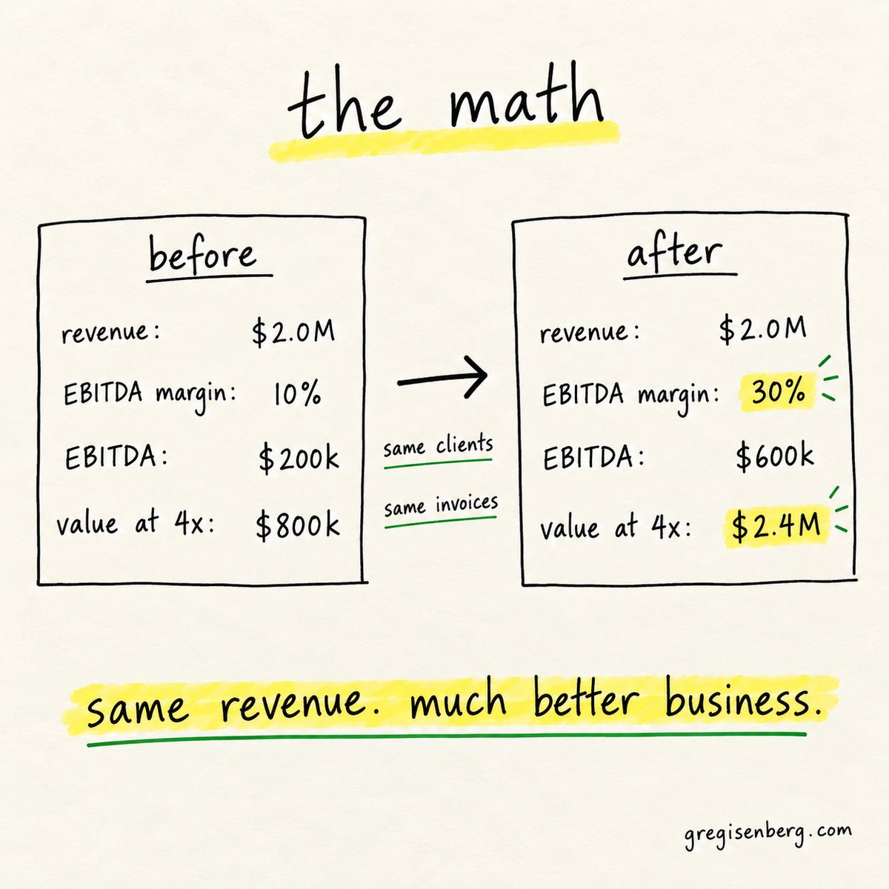
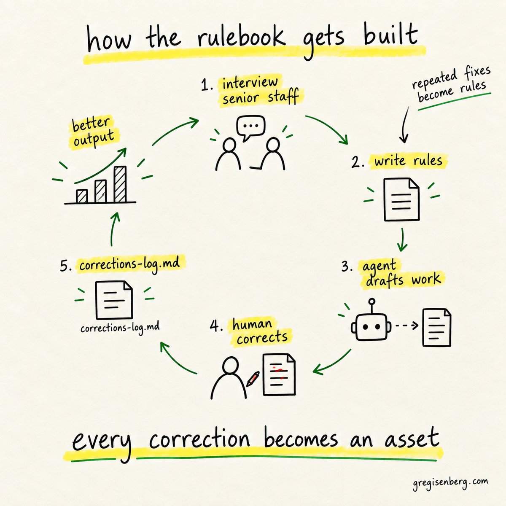

$5T opportunity: AI Roll Ups
I'll make the case why you should buy a business and use AI agents to 3x EBITDA. By the end of this dead simple guide, you'll know how to find the right business, buy it, and run it with agents, down to the folders and prompts. It's kinda long (~10-15 min read) but for those interested, worth it.
~$5 trillion worth of American businesses will change hands by 2035, according to McKinsey. Most belong to baby boomers heading into retirement, and a lot of those owners have nobody lined up to buy them.
In Bellingham, Washington, there's an accounting firm called Larson Gross. It was founded in 1949. It has five offices and about 200 employees, and Thrive Holdings recently bought a stake in it.
This tax season, the firm's AI processed 7,000 returns. Accountants saved 31% of their time on average. One accountant took a job that used to eat 180 hours a year and got it down to 15. That's insane!!!
That's the whole idea. Buy a business that already has the customers, the licenses and the trust, then change how the work gets done with AI agents.
What an AI roll up actually is
I think AI roll-ups are the new private equity.
A roll-up is a pretty old idea! You buy a lot of small businesses in the same industry, combine them, and the bigger company is worth more than the pieces were. PE has been running this play on services businesses for 40 years, mostly with financial engineering. Consolidate the back office, negotiate better vendor contracts, add debt, sell to a bigger fund in five years.
An AI roll-up changes the middle step. You buy a services business at a services price, then rebuild how the work gets delivered, with agents doing a large share of it. The customers stay. The revenue stays. The cost of delivering each unit of work drops.
A traditional services firm runs somewhere around 5 to 10% EBITDA margins. The thesis is that the same firm can run at 30 to 40%. Same clients, same invoices, 3 to 4x the profit.Why this is happening now
Three things landed at the same time.
1/The models got good enough at the actual work. Data entry, first drafts of tax returns, contract review, support tickets, maintenance requests. Two years ago the output needed redoing. Now it needs checking.
2/The owners are retiring. A large share of small services firms in the US are owned by people in their sixties and seventies who want out, and many have no succession plan. Their kids don't want the firm. Their employees can't afford to buy it.
3/And the arithmetic works. Services businesses sell for a low multiple because the market assumes their margins are stuck. If you can prove they aren't, you bought an asset at a discount to what it's now worth.
Who's doing it

1/Long Lake Property management 18 businesses acquired, $100M EBITDA in under two years, margins doubled
2/Crescendo Contact centers 90% of frontline tickets resolved by AI, 4x the margins of traditional operators
3/Titan MSP IT services 30%+ of workflows automated, targeting tripled net margins
4/Dwelly UK real estate Problem resolution down from 50 days to 20, margins doubled
5/Thrive Holdings has bought nearly 50 local accounting practices over two years and just committed $1 billion to buy more. Pretty insane!
6/ General Catalyst set aside $1.5 billion for this strategy and has put more than $750 million into at least ten companies. The results they report are striking, with an honest caveat: they're self-reported, and none of these companies has been through a recession yet.
GC's deal structure is worth copying at any size. Roughly 60 to 70% cash at close, and about 30% of the price rolled into equity for the founder, so the person who built the relationships has a reason to stay and make the handoff work. Interesting model.
Why this isn't only for Thrive, General Catalyst and the big dogs (you can do this too!)
When people read about billion dollar funds buying accounting firms, I assume lots of people think its out of reach of the average person. I think it's the opposite! The big funds are going to leave most of this market to individuals, and there are a few reasons why.
1/The funds need big deals. A billion dollar vehicle can't spend its time on a bookkeeping firm doing $2 million a year. The check is too small to move their returns. McKinsey expects about a 1M+ boomer-owned businesses to sell by 2035, and the vast majority of them are exactly that size. Nobody from Thrive is ever going to call them. That's where the competition is thinnest.
2/The tools are the same ones you already have. Larson Gross's tax agents run on OpenAI's Codex. The models behind the biggest roll-ups in the country are available to anyone for a monthly subscription. A fund builds a platform before it buys anything. A solo founder can build the workflows for one firm, with Claude Code or Codex, in the evenings, and improve them as the real work comes in.
3/You can be the integration. The biggest risk in any roll-up is buying faster than you can integrate. Funds have to hire managers to run each firm they buy, and those managers have to learn the business from scratch. When one person buys one firm, that person is in the office, knows every client by name, and watches every agent draft. The bottleneck that slows the funds down is the thing a solo founder does naturally.
4/ A good chunk of owners would often rather sell to a person. Someone who spent 40 years building a 12 person firm cares who takes it over. Many of them would rather hand it to someone who sat at their kitchen table and asked about their clients than to a fund they met on a Zoom call. That relationship is an advantage money can't buy.
5/The financing exists at this size. SBA loans and seller notes were built for exactly these deals. You can buy a business doing a couple million in revenue without raising a fund.
The funds are proving the model works. They're also showing everyone where the returns are, and most of those returns sit in businesses too small for them to bother with.
So you'll be seeing more and more billion-dollar funds get those headlines.
But truth is a solo founder with one good acquisition and a set of agents gets the other 999,000 businesses.
Lots of room for everyone.
Why buy instead of build
If you can build an AI accounting product, why buy an accounting firm?
Because the hardest parts of a services business have nothing to do with software. The client list took 30 years to build. The trust is personal. The licenses took exams and time. The knowledge of what "correct" means in the niche lives in the heads of people who've done the work for decades.
A startup spends years trying to earn what an acquisition hands you on day one. You don't have to convince a dental practice to trust a new vendor. They've trusted this firm since 2006.
Then there's the history. Every past engagement, every edge case, every mistake that got caught and fixed. That's the training material for your agents, and a startup has none of it.
A startup has to earn the customer and then do the work. An acquisition already has the customer, so all you have to do is change the work.
The holdco folder structure
So, if you're doing this solo or a tiny team, I'd love to give you some tips for using AI to build your little empire.
Before you buy anything, set up the system you'll run everything through. The folder structure is the operating model. Each acquired firm plugs into the same shape.

So, 3 little files do most of the work: target-criteria.md decides what you buy, rules/ decides whether the agents can be trusted, and corrections-log.md is how the rules get better every week. If you set up nothing else, set up those.
The agents you build
You need two sets of agents. The first set helps you buy the right business. The second set runs it once you own it.Before the deal

The most important design decision on this list: the reviewer can block but never ship, and the preparer can ship nothing on its own. Keeping those apart prevents most bad output from reaching a client.
Step 1: Sourcing
Most small firms that would sell aren't listed anywhere. The owner hasn't decided yet. Your job is to find them before a broker does.
Good sources: state licensing board lookups (CPAs, insurance agents, property managers all hold licenses with public records), Secretary of State business filings, industry association directories, BizBuySell and similar marketplaces, and local business journals.
You are a sourcing analyst for a holding company buying [industry] firms in [region]. Using the attached list of licensed firms, identify businesses that likely match these criteria: 5 to 50 employees, founded before 2005, owner-operated, no obvious succession. For each firm, note the founding year, the owner's name and how long they've held their license, the number of locations, the services offered, and any signs of retirement interest such as reduced hours, a partner who recently left, or an old website. Rank them by fit. Mark every inference clearly as an inference.
Then write to the owner yourself. Every one of these conversations starts with a person who's spent decades building something and wants to know it'll be treated well.
I gotta be honest though. I think the marketplaces aren't ideal. Once they get to the marketplaces, a lot of the "alpha" is gone, that's why i prefer reaching out in general. Keep that in mind.
Step 2: The scorecard

Score every target the same way so your excitement doesn't make the decision.
A firm scoring under 60% is usually a job, not an acquisition. A firm scoring above 80% deserves a letter of intent.
Step 3: Diligence with work samples
Financial diligence tells you what the business earned. It doesn't tell you what the work looks like, and the work is what you're about to change.
Ask for 20 to 50 real, anonymized examples of completed jobs across the firm's main services. Then build the automation map.
Review these completed work samples from a [industry] firm. For each distinct task in the workflow, list: what triggers it, the inputs, the steps taken, the output, roughly how long it takes a person, how often it happens per month, whether the output can be checked against a clear standard, and what would go wrong if it were done incorrectly. Then classify each task as: automate now, automate with human review, assist only, or keep human. Explain every classification. Flag anything you're uncertain about instead of guessing.
The output looks like this:

Multiply volume by hours, and you know where the margin is before you've signed anything. The automation map is the most valuable document in the deal.
Step 4: The math
Here's an illustrative example with round numbers.

You buy for around $800,000. You change nothing about who the clients are or what they pay. If you move the margin from 10% to 30% and hold it, the business is worth about three times what you paid at the same multiple, before anyone decides it deserves a higher one.
That's before tooling, before the months it takes, and before anything goes wrong. It's the shape of the opportunity. The whole game is whether you can hold the margin.
Small acquisitions like this are often financed with an SBA loan plus a seller note, where part of the price gets paid out over time. The seller note does the same job as GC's rollover equity: it keeps the person who knows the clients invested in the handoff.
Step 5: The rulebook
This is where the real asset gets built.
Every firm runs on rules nobody wrote down. The client who always sends documents late. The type of deduction the senior partner always double-checks. The phrasing a certain client finds rude. When the senior people leave, those rules leave with them. Your job in the first 60 days is to get them out of people's heads and into files.
You are interviewing a senior [role] at a [industry] firm to document how they do their work. Ask about the most common mistakes junior staff make, the clients who need special handling and why, the checks they always do before anything leaves the firm, and the situations where they'd stop and ask someone. After the interview, turn every answer into a numbered rule with an example. Mark any rule that conflicts with another. Nothing becomes active until they approve it.
Then turn the corrections log into rules every week:
Compare each agent draft with the version a person approved. Classify every change as a factual error, a client preference, missing information, or a style change. Propose a rule for any correction that happened more than once. Add each approved rule as a test case using the original input and the accepted output.
After a few hundred jobs, the rulebook is the reason your output can be trusted. Anyone can use the same models. Nobody else has your list of every way they go wrong in this niche.

Step 6: The first 100 days
Days 1 to 30: Change nothing the clients can see. Meet every employee one on one. Announce the deal to clients personally, with the former owner in the room or on the call. Get access to every system. Run the agents in shadow mode: they do the work in parallel, a person does it the normal way, and you compare. Start the rulebook interviews.
Days 31 to 60: Move the back office. Turn on intake and document collection for real. Put the preparer on the highest-volume, lowest-risk task from your automation map, with every draft reviewed. Track minutes of human attention per job, every week. Rewrite roles: the people who used to prepare now review.
Days 61 to 100: Expand carefully. Move the next 2 tasks on the map into production. Start the client-comms agent on routine status updates only. Hold a monthly session with senior staff to review the corrections log and approve new rules. Measure client retention and key-person retention alongside margin.
At day 100, you should know 3 things: how much of the work the agents can do reliably, what it actually costs you in human review, and whether anyone important is unhappy!
Good stuff.
The dashboard
5 numbers, every Monday, for every firm.

If margin goes up while client retention goes down, you're selling the asset to pay for the renovation pretty much.
What to buy
Industries that tend to pass most of the filters: accounting and bookkeeping, property management, insurance agencies, IT managed services, medical billing, payroll, HOA management, title and escrow, freight brokerage and staffing.
Each has repeatable work, checkable output, recurring clients, fragmented ownership and a lot of owners near retirement.
A million niches. These are just some ideas. More startup ideas at Ideabrowser.com
What breaks
1/ Buying faster than you can integrate. The most common way roll-ups fail, with or without AI. If acquisitions outrun integration, you own a pile of messes.
2/ The key people leave. The accountant who knows every client quits six weeks after the sale, and relationships walk out with her. Rollover equity, seller notes and real retention bonuses exist for this. Ive seen this a lot, it's brutal.
3/ Clients leave with the owner. Some clients were loyal to a person. Plan for some churn and make the transition slow and personal.
4/ Automating trust away. The margin gains come from the back office. The value comes from the relationship. Make the relationship feel cheaper and you've lost the thing you paid for.
5/Agents with too much authority. An agent that can send client emails without a checkpoint will eventually send the wrong one to the wrong person. Keep the checkpoints until the correction rate earns their removal.
6/ Believing the headline numbers. Most published results in this space are self-reported by young companies that are raising money. They may hold. They haven't been tested by a downturn. Underwrite your deal on your own numbers.
TLDR
So that's the whole playbook. My goal was just to get the creative juices flowing, I hope I did. For more creative juices flowing, you can always listen to my podcast @startupideaspod (Spotify/Apple/YouTube). If I can ever be helpful DM me or if you're looking for partnership for building your AI native company, speak to our design firm LCA. We are the leading product design firm for AI.
About $5 trillion worth of businesses are going to change hands over the next ten years. Most of them are small. Most of the owners care a lot about who takes over. And most of them still run the back office the same way they did twenty years ago. Shoutout to Boring Marketer who's been early on this trend and automating marketing with AI.
If you buy one, take care of the clients, keep the good people, and let agents handle the back office, you have a real shot at tripling what that business makes.
I think a lot of people are going to do this over the next decade. The ones who start with one boring business this year are going to be in a really good spot.
DM me if I can ever be helpful. Can't respond to everyone but will respond to some! Let me know if you enjoyed this guide, had any questions, feedback and what I should cover next.
I'm rooting for you.
Greg Isenberg